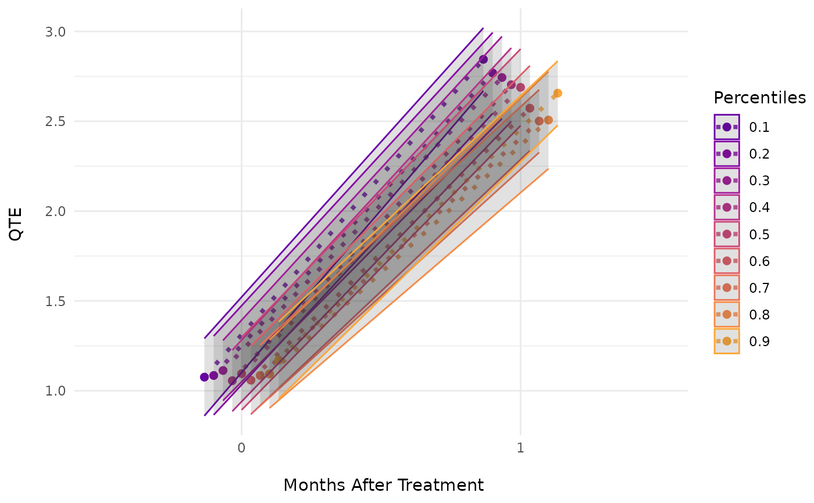
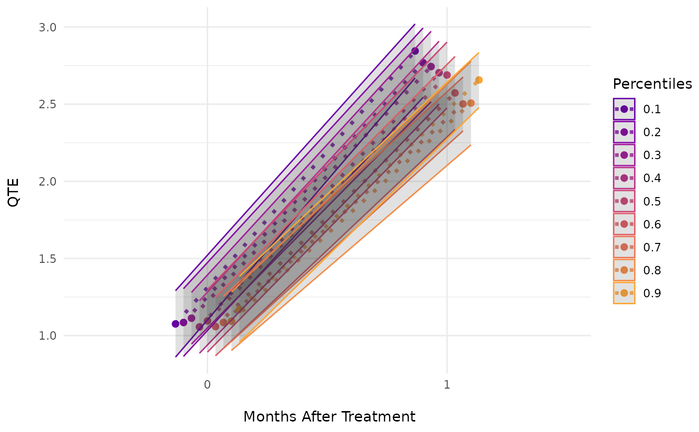

Calculates a changes-in-changes model as in Athey and Imbens (2006) for multiple periods and cohorts.
Usage
ecic(
yvar = NULL,
gvar = NULL,
tvar = NULL,
ivar = NULL,
dat = NULL,
myProbs = seq(0.1, 0.9, 0.1),
nMin = 40,
boot = c("weighted", "normal", "no"),
nReps = 10,
weight_n0 = c("n1", "n0"),
weight_n1 = c("n1", "n0"),
quant_algo = 1,
es = FALSE,
n_digits = NULL,
periods_es = NULL,
save_to_temp = FALSE,
progress_bar = c("progress", "void", "cli"),
nCores = 1
)Arguments
- yvar
Dependent variable.
- gvar
Group variable. Can be either a string (e.g., "first_treated") or an expression (e.g., first_treated). In a staggered treatment setting, the group variable typically denotes treatment cohort.
- tvar
Time variable. Can be a string (e.g., "year") or an expression (e.g., year).
- ivar
Individual Index variable. Can be a string (e.g., "country") or an expression (e.g., country). Only needed to check cohort sizes.
- dat
The data set.
- myProbs
Quantiles that the quantile treatment effects should be calculated for.
- nMin
Minimum observations per groups. Small groups are deleted.
- boot
Bootstrap. Resampling is done over the entire data set ("normal"), but might be weighted by period-cohort size ("weighted"). If you do not want to calculate standard error, set boot = "no".
- nReps
Number of bootstrap replications.
- weight_n0
Weight for the aggregation of the CDFs in the control group.
n1uses cohort sizes (Alternative:n0).- weight_n1
Weight for the aggregation of the CDFs in the treatment group.
n1uses cohort sizes (Alternative:n0).- quant_algo
Quantile algorithm (see Wikipedia for definitions).
- es
Event Study (Logical). If TRUE, a quantile treatment effect is estimated for each event-period.
- n_digits
Rounding the dependent variable before aggregating the empirical CDFs reduces the size of the imputation grid. This can significantly reduce the amount of RAM used in large data sets and improve running time, while reducing precision (Use with caution).
- periods_es
Periods of the event study.
- save_to_temp
Logical. If TRUE, results are temporarily saved. This reduces the RAM needed, but increases running time.
- progress_bar
Whether progress bar should be printed (select "void" for no progress bar or "cli" for another type of bar).
- nCores
Number of cores used. If set > 1, bootstrapping will run in parallel.
References
Athey, Susan and Guido W. Imbens (2006). Identification and Inference in Nonlinear Difference-in-Differences Models. doi:10.1111/j.1468-0262.2006.00668.x
Examples
# Example 1. Using the small mpdta data in the did package
data(dat, package = "ecic")
dat = dat[dat$first.treat <= 1983 & dat$countyreal <= 1000,] # small data for fast run
mod_res =
summary(
ecic(
yvar = lemp, # dependent variable
gvar = first.treat, # group indicator
tvar = year, # time indicator
ivar = countyreal, # unit ID
dat = dat, # dataset
boot = "normal", # bootstrap proceduce ("no", "normal", or "weighted")
nReps = 3 # number of bootstrap runs
)
)
#> Estimating a changes-in-changes model for 3 groups and 3918 observations with 3 (normal) bootstrap replications.
# Basic Plot
ecic_plot(mod_res)
 # \donttest{
# Example 2. Load some larger sample data
data(dat, package = "ecic")
# Estimate a basic model with the package's sample data
mod_res =
summary(
ecic(
yvar = lemp, # dependent variable
gvar = first.treat, # group indicator
tvar = year, # time indicator
ivar = countyreal, # unit ID
dat = dat, # dataset
boot = "weighted", # bootstrap proceduce ("no", "normal", or "weighted")
nReps = 20 # number of bootstrap runs
)
)
#> Estimating a changes-in-changes model for 3 groups and 3918 observations with 20 (weighted) bootstrap replications.
# Basic Plot
ecic_plot(mod_res)
# \donttest{
# Example 2. Load some larger sample data
data(dat, package = "ecic")
# Estimate a basic model with the package's sample data
mod_res =
summary(
ecic(
yvar = lemp, # dependent variable
gvar = first.treat, # group indicator
tvar = year, # time indicator
ivar = countyreal, # unit ID
dat = dat, # dataset
boot = "weighted", # bootstrap proceduce ("no", "normal", or "weighted")
nReps = 20 # number of bootstrap runs
)
)
#> Estimating a changes-in-changes model for 3 groups and 3918 observations with 20 (weighted) bootstrap replications.
# Basic Plot
ecic_plot(mod_res)
 # Example 3. An Event-Study Example
mod_res =
summary(
ecic(
es = TRUE, # aggregate for every event period
yvar = lemp, # dependent variable
gvar = first.treat, # group indicator
tvar = year, # time indicator
ivar = countyreal, # unit ID
dat = dat, # dataset
boot = "weighted", # bootstrap proceduce ("no", "normal", or "weighted")
nReps = 20 # number of bootstrap runs
)
)
#> Estimating a changes-in-changes model for 3 groups and 3918 observations with 20 (weighted) bootstrap replications.
#> Warning: Bootstrap run 1: Only 1 post-treatment periods can be calculated (plus contemporaneous).
#> Warning: Bootstrap run 2: Only 1 post-treatment periods can be calculated (plus contemporaneous).
#> Warning: Bootstrap run 3: Only 1 post-treatment periods can be calculated (plus contemporaneous).
#> Warning: Bootstrap run 4: Only 1 post-treatment periods can be calculated (plus contemporaneous).
#> Warning: Bootstrap run 5: Only 1 post-treatment periods can be calculated (plus contemporaneous).
#> Warning: Bootstrap run 6: Only 1 post-treatment periods can be calculated (plus contemporaneous).
#> Warning: Bootstrap run 7: Only 1 post-treatment periods can be calculated (plus contemporaneous).
#> Warning: Bootstrap run 8: Only 1 post-treatment periods can be calculated (plus contemporaneous).
#> Warning: Bootstrap run 9: Only 1 post-treatment periods can be calculated (plus contemporaneous).
#> Warning: Bootstrap run 10: Only 1 post-treatment periods can be calculated (plus contemporaneous).
#> Warning: Bootstrap run 11: Only 1 post-treatment periods can be calculated (plus contemporaneous).
#> Warning: Bootstrap run 12: Only 1 post-treatment periods can be calculated (plus contemporaneous).
#> Warning: Bootstrap run 13: Only 1 post-treatment periods can be calculated (plus contemporaneous).
#> Warning: Bootstrap run 14: Only 1 post-treatment periods can be calculated (plus contemporaneous).
#> Warning: Bootstrap run 15: Only 1 post-treatment periods can be calculated (plus contemporaneous).
#> Warning: Bootstrap run 16: Only 1 post-treatment periods can be calculated (plus contemporaneous).
#> Warning: Bootstrap run 17: Only 1 post-treatment periods can be calculated (plus contemporaneous).
#> Warning: Bootstrap run 18: Only 1 post-treatment periods can be calculated (plus contemporaneous).
#> Warning: Bootstrap run 19: Only 1 post-treatment periods can be calculated (plus contemporaneous).
#> Warning: Bootstrap run 20: Only 1 post-treatment periods can be calculated (plus contemporaneous).
# Plots
ecic_plot(mod_res) # aggregated in one plot

ecic_plot(mod_res, es_type = "for_quantiles") # individually for every quantile
# Example 3. An Event-Study Example
mod_res =
summary(
ecic(
es = TRUE, # aggregate for every event period
yvar = lemp, # dependent variable
gvar = first.treat, # group indicator
tvar = year, # time indicator
ivar = countyreal, # unit ID
dat = dat, # dataset
boot = "weighted", # bootstrap proceduce ("no", "normal", or "weighted")
nReps = 20 # number of bootstrap runs
)
)
#> Estimating a changes-in-changes model for 3 groups and 3918 observations with 20 (weighted) bootstrap replications.
#> Warning: Bootstrap run 1: Only 1 post-treatment periods can be calculated (plus contemporaneous).
#> Warning: Bootstrap run 2: Only 1 post-treatment periods can be calculated (plus contemporaneous).
#> Warning: Bootstrap run 3: Only 1 post-treatment periods can be calculated (plus contemporaneous).
#> Warning: Bootstrap run 4: Only 1 post-treatment periods can be calculated (plus contemporaneous).
#> Warning: Bootstrap run 5: Only 1 post-treatment periods can be calculated (plus contemporaneous).
#> Warning: Bootstrap run 6: Only 1 post-treatment periods can be calculated (plus contemporaneous).
#> Warning: Bootstrap run 7: Only 1 post-treatment periods can be calculated (plus contemporaneous).
#> Warning: Bootstrap run 8: Only 1 post-treatment periods can be calculated (plus contemporaneous).
#> Warning: Bootstrap run 9: Only 1 post-treatment periods can be calculated (plus contemporaneous).
#> Warning: Bootstrap run 10: Only 1 post-treatment periods can be calculated (plus contemporaneous).
#> Warning: Bootstrap run 11: Only 1 post-treatment periods can be calculated (plus contemporaneous).
#> Warning: Bootstrap run 12: Only 1 post-treatment periods can be calculated (plus contemporaneous).
#> Warning: Bootstrap run 13: Only 1 post-treatment periods can be calculated (plus contemporaneous).
#> Warning: Bootstrap run 14: Only 1 post-treatment periods can be calculated (plus contemporaneous).
#> Warning: Bootstrap run 15: Only 1 post-treatment periods can be calculated (plus contemporaneous).
#> Warning: Bootstrap run 16: Only 1 post-treatment periods can be calculated (plus contemporaneous).
#> Warning: Bootstrap run 17: Only 1 post-treatment periods can be calculated (plus contemporaneous).
#> Warning: Bootstrap run 18: Only 1 post-treatment periods can be calculated (plus contemporaneous).
#> Warning: Bootstrap run 19: Only 1 post-treatment periods can be calculated (plus contemporaneous).
#> Warning: Bootstrap run 20: Only 1 post-treatment periods can be calculated (plus contemporaneous).
# Plots
ecic_plot(mod_res) # aggregated in one plot

ecic_plot(mod_res, es_type = "for_quantiles") # individually for every quantile
 ecic_plot(mod_res, es_type = "for_periods") # individually for every period
ecic_plot(mod_res, es_type = "for_periods") # individually for every period
 # }
# }